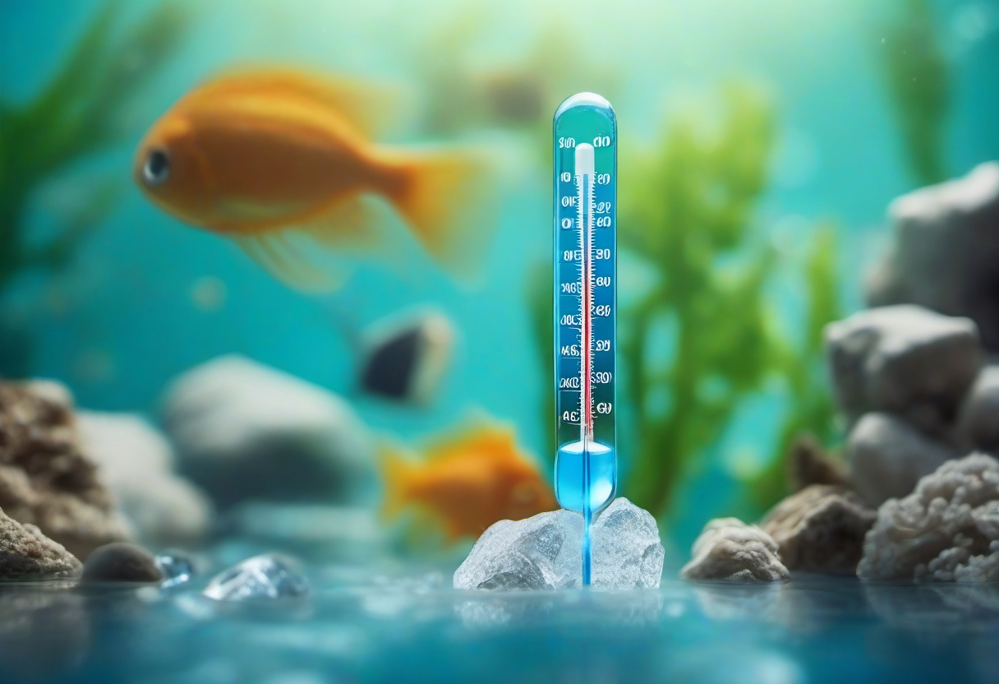

Warum die Wassertemperatur im Aquarium im Sommer zur Gefahr wird
Die meisten beliebten Aquarienfische stammen aus gemäßigten Klimazonen, in denen die Wassertemperatur das ganze Jahr über erstaunlich konstant bleibt. Im heimischen Aquarium funktioniert das System nur, solange wir die Temperatur aktiv stabil halten – im Winter mit einem Heizstab, im Sommer leider allzu oft mit dem Wunschdenken, dass schon nichts passieren wird. Steigt die Wassertemperatur im Aquarium im Sommer jedoch über die artgerechte Grenze, geraten Fische, Pflanzen und das gesamte biologische Gleichgewicht unter Druck. Dieser Ratgeber zeigt dir, welche Temperaturgrenzen wirklich kritisch sind, wie du Überhitzung erkennst und mit welchen erprobten Methoden du dein Aquarium kühlen kannst – ganz ohne teuren Chiller.
Das Tückische: Eine zu hohe Wassertemperatur wirkt nicht sofort tödlich. Sie schwächt die Fische schleichend, senkt den Sauerstoffgehalt, beschleunigt den Stoffwechsel und macht die Tiere anfällig für Krankheiten. Erste Warnzeichen werden deshalb oft übersehen. Wer sein Aquarium jedoch kühlt und stabil hält, hat über den gesamten Sommer hinweg gesunde, aktive Fische – und erspart sich Notfallbesuche im Zoofachhandel.
Optimale Temperaturbereiche je Fischart
Bevor du ans Kühlen denkst, musst du wissen, was in deinem Becken überhaupt passieren darf. Die Wassertemperatur im Aquarium richtet sich immer nach dem wärmeliebendsten Bewohner. Hast du Diskus oder Skalare, sind 27–29 °C Pflicht. Pflegst du Neonsalmler, Guppys oder Panzerwelse, ist 24–26 °C ideal. Eine pauschale Aussage „Wassertemperatur Aquarium Sommer" hilft also wenig – entscheidend ist der Besatz.
Übersicht gängiger Arten
- Kaltwasserfische (Goldfische, Moderlieschen): 18–22 °C – vertragen kurzfristig bis 26 °C, leiden aber bei Dauerhitze.
- Standard-Gesellschaftsbecken (Guppy, Platy, Neon, Panzerwels): 22–26 °C – optimal, kurzfristig 28 °C noch tolerabel.
- Skalare, Fadenfische, Buntbarsche: 24–28 °C – warm, aber stabile Pflege.
- Diskus: 28–30 °C – fast schon tropisch, in normalen Wohnungen im Sommer meist problemlos.
- Garnelen (Neocaridina): 20–24 °C – über 26 °C droht erhöhte Sterblichkeit.
Die goldene Regel: Schon 2 °C über der oberen Dauergrenze reichen aus, um Fische dauerhaft zu stressen. Steigt das Thermometer über 30 °C, wird es für die meisten Süßwasserfische akut kritisch – egal, ob sie aus dem Amazonas oder aus Südostasien stammen.
🛒 Präzise Aquarien-Thermometer & Lüfter
Ein digitales Thermometer mit Alarmfunktion und ein leiser Axiallüfter gehören zur Grundausstattung gegen Sommerhitze.
Warum Hitze so gefährlich ist: das Sauerstoffproblem
Warmes Wasser kann deutlich weniger Sauerstoff lösen als kaltes. Während bei 20 °C rund 9 mg/l Sauerstoff im Wasser gelöst sind, sinkt dieser Wert bei 28 °C auf etwa 7,5 mg/l, bei 30 °C auf unter 7 mg/l. Gleichzeitig erhöht sich der Sauerstoffbedarf der Fische mit jedem Grad: Ihr Stoffwechsel läuft schneller, sie atmen schneller, sie bewegen sich mehr – und brauchen deshalb mehr Sauerstoff, bekommen aber weniger. Diese Schere ist der Hauptgrund, warum Fische bei Hitzewellen selbst in gut bepflanzten Becken plötzlich an der Oberfläche hängen und nach Luft schnappen.
Eine zusätzliche Belastung entsteht durch die Bakterien im Filter und Bodengrund. Auch sie arbeiten bei höheren Temperaturen schneller und verbrauchen mehr Sauerstoff. In einem überhitzten Aquarium kämpfen Fische, Bakterien und Pflanzen buchstäblich um jeden Milliliter O₂. Deshalb ist es im Sommer doppelt wichtig, die Oberflächenbewegung hoch und den CO₂-Wert moderat zu halten. Eine starke Strömung an der Wasseroberfläche reichert das Wasser aktiv mit Sauerstoff an und ist die wirksamste Sofortmaßnahme bei beginnender Überhitzung.
Ursachen für Überhitzung – warum wird das Becken überhaupt zu warm?
Bevor du an teure Technik denkst, lohnt sich ein Blick auf die typischen Ursachen. Die Wassertemperatur im Aquarium folgt nämlich im Wesentlichen der Raumtemperatur – und die wird in deutschen Wohnungen im Hochsommer regelmäßig 28 bis 32 °C warm.
Direkte Sonneneinstrahlung
Das Aquarium am Südfenster: tagsüber wandert die Sonne über das Becken, heizt das Wasser auf und macht jede Kühlung zunichte. Schon zwei bis drei Stunden direkte Sonne können die Wassertemperatur um 3–5 °C anheben. Lösung: Vorhänge, Rollos oder Jalousien tagsüber schließen, Aquarium umstellen oder mit einer reflektierenden Folie die Sonneneinstrahlung reduzieren. Die sicherste Option ist ein Standortwechsel an eine Nord- oder Ostseite.
Heizstab läuft auf Hochtouren
Viele Einsteiger vergessen, dass ihr Heizstab im Sommer das größte Problem ist. Ist er auf 25 °C eingestellt und die Raumtemperatur steigt auf 30 °C, schaltet er ab – soweit korrekt. Steht der Stab jedoch an einer schlecht durchströmten Stelle im Becken oder in der Nähe der Beleuchtung, misst er eine zu niedrige Temperatur und heizt unnötig nach. Kontrolliere im Sommer die Position des Heizstabs und reduziere die Solltemperatur um 2–3 °C, damit er bei Hitzewellen sicher abschaltet.
Beleuchtung als Wärmequelle
Ältere T5- oder HQI-Leuchten geben enorme Wärme direkt an die Wasseroberfläche ab. Selbst moderne LED-Aufsatzleuchten können je nach Wattage 1–2 °C Aufheizung verursachen. Im Sommer empfiehlt es sich, die Beleuchtungsdauer zu verkürzen, auf kühlere LED-Panels umzusteigen oder die Leuchte etwas höher zu hängen, damit die Wärme weniger direkt ins Wasser abstrahlt.
Wärmeabgabe von Technik und Unterschrank
Filter, CO₂-Anlage und Netzteil geben allesamt Wärme ab. In einem geschlossenen Unterschrank kann sich diese stauen. Lüftungsschlitze, ein offener Türenbereich oder ein leiser PC-Lüfter im Schrank verbessern den Luftaustausch und reduzieren die Aufheizung deutlich. Ein Außenfilter, der im Schrank steht, kann im Sommer bis zu 2 °C zusätzlich beitragen – das ist mehr, als viele denken.
Effektive Kühlmethoden ohne Chiller
Ein Aquarium-Kühler (Chiller) ist die teuerste, aber nicht die einzige Lösung. Für die meisten Hobbyaquarianer reichen ein paar gezielte Maßnahmen völlig aus, um die Wassertemperatur im Sommer im sicheren Bereich zu halten.
1. Axiallüfter über der Wasseroberfläche
Die populärste Chiller-Alternative: Ein oder zwei leise 80–120-mm-PC-Lüfter, montiert in einem Abstand von wenigen Zentimetern über der Wasseroberfläche. Sie erzeugen einen gleichmäßigen Luftstrom, der die Verdunstung fördert – Verdunstung entzieht dem Wasser Wärme, ähnlich wie wenn man eine heiße Tasse Tee anpustet. Mit zwei Lüftern kannst du die Wassertemperatur in der Regel um 1–3 °C senken. Achte auf leise Modelle (maximal 20–25 dB) und eine 12V-Stromversorgung – ein passendes Netzteil gehört für wenige Euro zum Standard.
Wichtig: Die verstärkte Verdunstung muss regelmäßig mit Frischwasser (oder aufbereitetem Wasser) ausgeglichen werden. In offenen Becken verdunsten pro Tag und Lüfter durchaus 1–3 Liter. Miss den Wasserstand morgens und abends, um Überraschungen zu vermeiden.
2. Eisbeutel und Kühlakkus – die Notlösung
Wenn die Wassertemperatur im Aquarium plötzlich über 30 °C steigt, ist schnelles Handeln gefragt. Verschlossene Kühlakkus oder Gefrierbeutel mit Wasser, die im Becken schwimmen, kühlen zuverlässig – aber bitte niemals offene Eiswürfel direkt ins Wasser geben. Durch das Schmelzwasser können sich Parameter wie GH, KH und pH unkontrolliert verschieben. Verwende stattdessen Plastikflaschen, die du mit Aquarienwasser füllst, einfrierst und dann vorsichtig ins Becken hängst oder legst. So bleibt die Wasserchemie stabil.
Diese Methode ist als Notfall-Hilfe sinnvoll, ersetzt aber keine dauerhafte Lösung. Wer regelmäßig Hitzetage hat, ist mit Lüftern oder Standortwechsel besser beraten.
3. Standortwechsel des Beckens
Klingt banal, ist aber eine der wirksamsten Maßnahmen: Stelle das Aquarium in den heißesten Wochen in den kühlsten Raum der Wohnung. Schlafzimmer und Keller eignen sich oft besser als das sonnige Wohnzimmer. Pro 1 °C weniger Raumtemperatur sinkt die Wassertemperatur etwa um denselben Wert. Wenn du das Aquarium an einen besser geeigneten Ort umstellen kannst, sparst du dir dauerhaft die Kühlung.
4. Nachts lüften und Raum kühlen
In vielen Regionen kühlt die Luft in der Nacht deutlich ab. Nutze diese natürliche Abkühlung, indem du nachts Fenster öffnest und mit einem leisen Stand- oder Deckenventilator die kühle Luft ins Aquarium bringst. Ein Zeitschaltuhrgesteuerter Ventilator, der nachts auf voller Stufe läuft, kann über 8 Stunden die Temperatur um 2–4 °C senken. In Kombination mit Axiallüftern über dem Becken ist das eine erstaunlich effektive Chiller-Alternative.
5. Beleuchtung und Heizstab anpassen
Im Hochsommer gilt: weniger Licht, kürzere Beleuchtungsdauer, kühlere LED. Reduziere die Photoperiode von 9 auf 6–7 Stunden, dimme die LED auf 60–70 % und verzichte auf Mittagspitzen. Kontrolliere den Heizstab und drehe ihn 2–3 °C unter die Solltemperatur – er muss bei Hitze zuverlässig aus bleiben. So verhinderst du, dass Technik die Aufheizung noch verstärkt.
6. Stoßlüften statt Dauerhitze
Während einer Hitzewelle im Raum gilt: Stoßlüften am frühen Morgen und späten Abend, tagsüber Fenster geschlossen halten und Jalousien herunterlassen. Diese simple Verhaltensänderung reduziert die Raumtemperatur oftmals um 2–3 °C – und damit automatisch die Wassertemperatur im Aquarium.
🛒 Empfohlene Helfer für heiße Sommertage
Mit dieser Ausrüstung übersteht dein Aquarium auch eine Hitzewelle ohne Chiller:
Wann lohnt sich ein Chiller doch?
So gut die Chiller-Alternativen sind, gibt es Grenzen: Diskushalter, Wirbellose in Warmwasserbecken oder sehr warme Aquascaping-Tanks mit viel Licht können an heißen Tagen über 30 °C steigen, wenn nichts aktives kühlt. In solchen Fällen ist ein Aquarium-Chiller tatsächlich die einzige zuverlässige Lösung. Moderne Kompressor-Chiller kühlen ein 300-Liter-Becken um 5–8 °C herunter und laufen flüsterleise – kosten aber je nach Leistung 400 bis 1.200 Euro. Für die meisten Gesellschaftsbecken ist das jedoch überdimensioniert.
Vorbeugung – so bleibt dein Aquarium den ganzen Sommer kühl
Die beste Kühlung ist die, die gar nicht erst nötig wird. Mit ein paar Vorsichtsmaßnahmen bleibst du auch in Hitzesommern entspannt:
- Standort ohne direkte Sonneneinstrahlung wählen – Nord- oder Ostseite bevorzugen.
- LED-Beleuchtung mit einstellbarer Helligkeit nutzen, im Sommer auf 70 % dimmen.
- Heizstab im Sommer 2–3 °C unter Solltemperatur einstellen und regelmäßig prüfen, ob er abschaltet.
- Ein digitales Thermometer mit Alarmfunktion einsetzen, das bei Überschreiten einer kritischen Temperatur warnt.
- Lüfter-Set dauerhaft montieren – nicht erst, wenn die Hitze kommt. So bist du vorbereitet und kannst notfalls sofort einschalten.
- Bei geplanter Abwesenheit (Urlaub) Nachbarn oder Freunde informieren, die im Notfall Kühlakkus einlegen oder den Filterauslass für mehr Oberflächenbewegung verstellen.
- Regelmäßig Wassertests machen – bei Hitze verändern sich Nitrit- und Ammoniumwerte schneller, was die Fische zusätzlich belastet.
Wer diese Punkte beachtet, erlebt den nächsten Sommer ohne Panik vor dem Thermometer. Dein Aquarium bleibt stabil, die Fische bleiben aktiv, und du kannst die warme Jahreszeit entspannt genießen.
Fazit – Sommerhitze ist lösbar
Die Wassertemperatur im Aquarium im Sommer zu halten, ist kein Hexenwerk. Mit einem klaren Blick auf die Ursachen, einem einfachen Lüfter-Set und ein paar Verhaltensänderungen beim Lüften und bei der Beleuchtung erreichst du in 90 % aller Fälle stabile 25–27 °C – auch in einer Hitzewelle. Nur in Ausnahmefällen mit sehr temperaturempfindlichen Arten oder extremen Bedingungen ist ein Chiller sinnvoll. Für die meisten Hobbyaquarianer gilt: Wer vorbereitet ist, muss die teure Kühltechnik nicht kaufen.
Beobachte dein Becken, höre auf deine Fische und handle frühzeitig. Dann wird der Sommer zur entspannten Jahreszeit – für dich und deine Unterwasserwelt.
Mehr zum Thema Wassertemperatur und Heiztechnik findest du in unserem Artikel Heizung & Temperatur im Aquarium. Zur dauerhaft sicheren Pflege deiner Tiere empfehlen wir unseren Aquarium-Pflegeroutine-Guide.